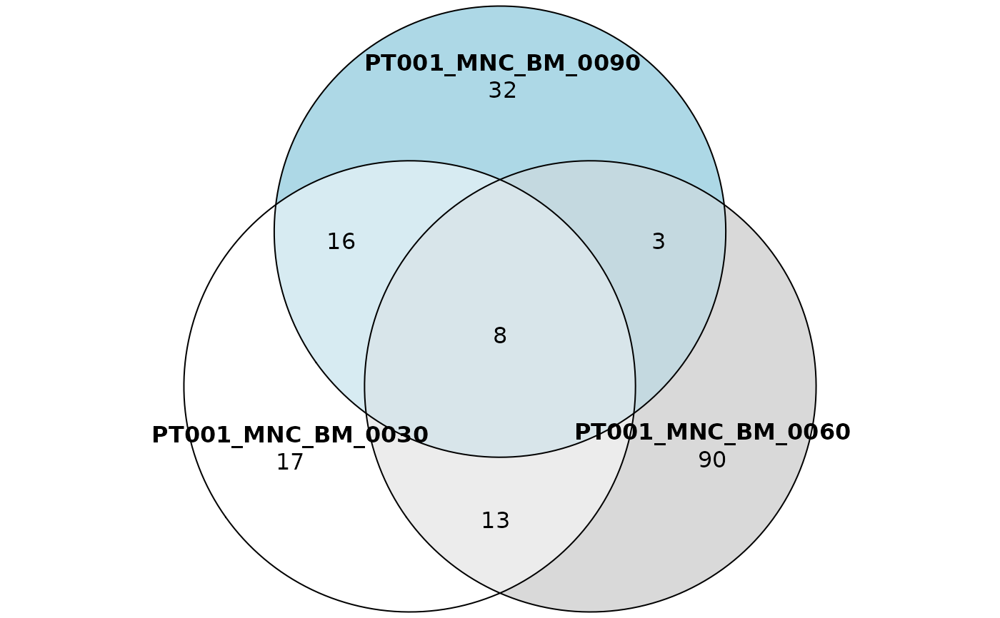

Produce tables to plot sharing venn or euler diagrams.
Source:R/plotting-functions.R
sharing_venn.Rd![[Stable]](figures/lifecycle-stable.svg) This function processes a sharing data frame obtained via
This function processes a sharing data frame obtained via is_sharing()
with the option table_for_venn = TRUE to obtain a list of objects
that can be plotted as venn or euler diagrams.
Details
The functions requires the package eulerr. Each row of the input data frame is representable as a venn/euler diagram. The function allows to specify a range of row indexes to obtain a list of plottable objects all at once, leave it to NULL to process all rows.
To actually plot the data it is sufficient to call the function plot()
and specify optional customization arguments. See
eulerr docs
for more detail on this.
See also
Other Plotting functions:
CIS_volcano_plot(),
HSC_population_plot(),
circos_genomic_density(),
fisher_scatterplot(),
integration_alluvial_plot(),
sharing_heatmap(),
top_abund_tableGrob(),
top_cis_overtime_heatmap()
Examples
data("integration_matrices", package = "ISAnalytics")
data("association_file", package = "ISAnalytics")
aggreg <- aggregate_values_by_key(
x = integration_matrices,
association_file = association_file,
value_cols = c("seqCount", "fragmentEstimate")
)
sharing <- is_sharing(aggreg, n_comp = 3, table_for_venn = TRUE)
venn_tbls <- sharing_venn(sharing, row_range = 1:3, euler = FALSE)
venn_tbls
#> [[1]]
#> 3 set Venn diagram
#>
#> h k a b phi
#> PT001_MNC_BM_0030 -0.42 -0.36 1.05 1.05 3.76
#> PT001_MNC_BM_0060 0.42 -0.36 1.05 1.05 3.76
#> PT001_MNC_BM_0090 0.00 0.36 1.05 1.05 3.76
#>
#> [[2]]
#> 3 set Venn diagram
#>
#> h k a b phi
#> PT001_MNC_BM_0030 -0.42 -0.36 1.05 1.05 3.76
#> PT001_MNC_BM_0060 0.42 -0.36 1.05 1.05 3.76
#> PT001_MNC_BM_0180 0.00 0.36 1.05 1.05 3.76
#>
#> [[3]]
#> 3 set Venn diagram
#>
#> h k a b phi
#> PT001_MNC_BM_0030 -0.42 -0.36 1.05 1.05 3.76
#> PT001_MNC_BM_0060 0.42 -0.36 1.05 1.05 3.76
#> PT001_MNC_BM_0360 0.00 0.36 1.05 1.05 3.76
#>
plot(venn_tbls[[1]])
